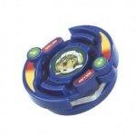

Roller Defenser
Note: Since this article was published, significant new and more accurate information has come to light, and as a result, this article must be updated. Please do not take all of the information here as the truth, as more extensive testing on the parts of this Beyblade has since provided information which conflicts with and/or expands upon the understanding of these parts this article was based upon. However, the Overall section has been updated based on this new information, and as such is a reliable source of information. Updates will be posted on the main page when completed.
| Roller Defenser | |
|  | |
| Number: | 26 |
|---|---|
| System: | 4-Layer |
| Type: | Defense |
Contents
Attack Ring (AR): Roller Defense Ring
- Weight: 7 grams
Roller Defense Ring is a compact AR built for Defense. Its gimmick is to deflect attacks with use of its two wheels. On paper, this may seem useful for Defense, however, the wheels work as a force against the AR. When in contact from a hit, the wheels are supposed to spin in order to deflect attacks. Depending on the parts used with it, the wheels can stay fixed causing it to recoil and lose balance. This also strains the AR which is one of the main causes of it breaking.
Using Roller Defense Ring in Left Spin
NOTE: The following has been officially declared illegal under WBO rulings, and is being kept here for informational purposes. Although it can not fit into a Left SG properly, it is still possible for it to work in left spin. By placing the wheels on top of the AR instead of the spot where they belong, the gap where the launcher fits into the AR becomes tight enough for it to stay on.
Use in First Generation Zombies
Although Wing Cross (Bistool, Gekiryu-oh, Frostic Dranzer) was available for use, spin direction was more essential to stealing spin than the alignment of the Zombie Beyblade as a whole.
An example combo would be:
- AR: Roller Defense Ring (Roller Defenser)
- WD: Wide Survivor
- BB: Bearing Base (Metal Dragoon Bearing Stinger)
Roller Defense Ring is compact enough that it would mostly rely on the Wide Survivor for taking the hits in order to steal spin.
Weight Disk (WD): Heavy
See Heavy (WD).
Blade Base (BB): Semi-Flat Base
See Semi-Flat Base.
Overall
With an excellent, if somewhat fragile Attack Ring for all types of Right Spin Defense, Compact and Survival customizations, a useful Weight Disk and decent, if outclassed Blade Base, as well as solid performance out of the box, Roller Defenser is undoubtedly an excellent purchase. However, due to the wide range of alternatives to its Attack Ring such as Tiger Defenser and War Lion, both of which can be used in Left Spin, Roller Defenser is not an essential purchase. This Beyblade is not a must-have, but it is nevertheless a welcome addition to any collection.